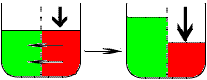
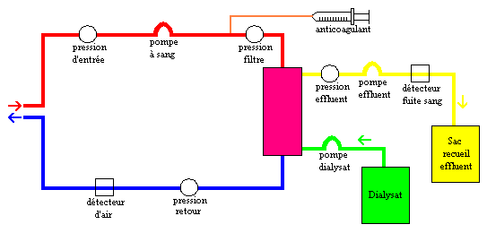
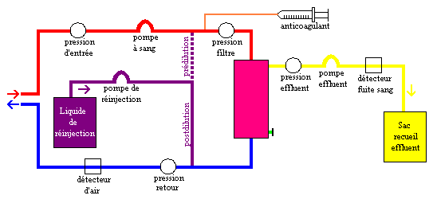
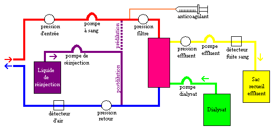

L'epuration extra-renale
DefinitionL'epuration extra-renale est une methode d'elimination des secretions (substances et liquides) en exces des reins afin de palier le deficit de la fonction excretrice de ceux-ci.
Il existe 3 methodes d'epuration extra-renale :
- L'hemofiltration : mecanisme d'ultrafiltration (convection).
- L'hemodialyse : mecanisme de diffusion (conduction).
- L'hemodiafiltration : mecanismes d'ultrafiltration (convection) et de diffusion (conduction).
Mecanismes de transfert des solutes
Il y a deux mecanismes de transfert de solute pour la dialyse renale :
- La diffusion ou conduction.
- L'ultrafiltration ou convection.
La diffusion ou conduction est le transfert passif de solute et de molecules de faibles poids moleculaire selon un gradient de concentration du milieu le plus concentre vers le moins concentre.
Il n'y a pas de passage de solvant (eau).
Lorsqu'on met en contact deux solutions (en l'occurrence, le sang et le
dialysat) contenant differentes concentrations de certaines substances, separees
par une membrane semi-permeable, les molecules qui les composent se repartissent
de l'une vers l'autre en se deplaeant du milieu le plus concentre vers le moins
concentre, jusqu'e l'obtention d'un equilibre. La membrane comporte une
multitude de trous de tailles differentes, de faeon a ce que les petites comme
les grosses molecules puissent la traverser, mais pas les cellules
sanguines.
Les mineraux en exces dans le sang vont passer dans le dialysat,
et reciproquement.
Elle est dependante de :
- La concentration de part et d'autre de la membrane.
- La surface d'echange : la membrane.

L'ultrafiltration ou convection est le transfert actif de solute et de solvant (eau) selon un gradient de pression hydrostatique de chaque cote de la membrane, avec une pression positive dans le compartiment sanguin (chez le patient) et une pression negative dans le compartiment du dialysat.
C'est ce phenomene qui va permettre de corriger l'exces de liquide dans le sang du malade. On exerce une pression sur le compartiment sanguin, l'eau qu'elle contient en exces traverse la membrane et rejoint le dialysat.
Elle est dependante du :
- Debit de filtration.
- La taille des pores de la membrane : degre de porosite de la membrane (la taille des pores de la membrane va limiter le transfert).

Indications
- Insuffisance renale aigue.
- Intoxications medicamenteuses.
- Retention hydrosodee severe d'origine insuffisance cardiaque.
- Troubles severes de la thermoregulation.
Materiel
- Un generateur :
- Le generateur est alimente par de l'eau de qualite pour l'hemodialyse, il prepare le dialysat et contrele son pH et sa temperature; il assure le circulation du dialysat, l'ultrafiltration ainsi que la circulation extra-corporelle.
- Un dialyseur :
- Le dialyseur ou hemofiltre ou rein artificiel est constitue d'une membrane semi-permeable disposee de telle sorte qu'elle delimite un compartiment interne dans lequel le sang circule, et un compartiment externe dans lequel circule le dialysat en sens inverse.
- Un abord vasculaire :
- L'hemodialyse necessite une voie d'abord vasculaire capable de donner un debit de l'ordre de 300ml/ minute.
- Catheter veineux de gros calibre e double lumiere : femoral, sous-clavier, jugulaire interne.
- Fistule arterio-veineuse :
- Quand le vaisseau n'est plus de bonne qualite, le chirurgien cree un vaisseau artificiel, la fistule : c'est l'anastomose de deux vaisseaux, une artere et une veine. Le debit sanguin provenant de l'artere passera ainsi en partie directement dans le reseau veineux peripherique, ce qui provoquera un gonflement de la veine, sur plusieurs semaines, permettant ainsi un acces privilegie pour les seances d'hemodialyse.
- Un circuit extra-corporel :
- Ligne "arterielle" : allant du patient vers le dialyseur.
- Ligne "veineuse" : allant du dialyseur vers le patient.
L'hemodialyse
L'hemodialyse fait appel au mecanisme de diffusion (conduction).

- Le sang est aspire par la ligne "arterielle" (ligne rouge) par la pompe a sang.
- Le sang est melange a un anticoagulant qui permet d'eviter une coagulation du sang dans le systeme d'epuration extracorporel par activation de la coagulation au contact des materiaux exogenes.
- Le sang passe a travers un dialyseur permeable compose de fibres capillaires creuses.
- Le dialysat circule dans l'hemofiltre a contre-courant du flux sanguin, la membrane joue son rele de filtre, il n'y a pas de contact entre le dialysat et le sang.
- Le liquide effluent (filtrat) est recueilli dans une poche suspendue a une balance qui calcule le poids des sorties liquidiennes (filtrat).
- La quantite de filtrat recueilli doit correspondre a la perte de poids nette souhaitee.
- Le dialysat et le filtrat sont contreles par les pompes de dialysat et d'effluent, qui calculent les entrees et les sorties liquidiennes.
- Le sang hemodialyse est reinjecte au patient par la ligne "veineuse" (ligne bleue).
L'hemofiltration
L'hemofiltration fait appel au mecanisme d'ultrafiltration (convection).

- Le sang est aspire par la ligne "arterielle" (ligne rouge) par la pompe a sang.
- Le sang est melange a un anticoagulant qui permet d'eviter une coagulation du sang dans le systeme d'epuration extracorporel par activation de la coagulation au contact des materiaux exogenes.
- Le sang passe a travers un dialyseur de haute permeabilite compose de fibres capillaires creuses.
- Une solution sterile de substitution physiologique est injectee dans le sang avant ou apres le dialyseur pour compenser la perte liquidienne. Elle est suspendue a une balance qui permet de calculer les entrees liquidiennes.
- Predilution : injection sur la ligne arterielle : avant le filtre.
- Postdilution : injection sur la ligne veineuse : apres le filtre.
- Le liquide effluent (filtrat) est recueilli dans une poche suspendue a une balance qui permet de calculer les entrees liquidiennes.
- Les balances et les pompes de substitution et d'effluent, calculent les entrees et les sorties liquidiennes et contrelent et compensent les solutions de substitution et de filtrat.
- Le sang hemofiltre est reinjecte au patient par la ligne "veineuse".
L'hemodiafiltration
L'hemofiltration fait appel aux deux mecanismes de transfert de solute, l'ultrafiltration (convection) et la diffusion (conduction).

- Le sang est aspire par la ligne "arterielle" (ligne rouge) par la pompe a sang.
- Le sang est melange a un anticoagulant qui permet d'eviter une coagulation du sang dans le systeme d'epuration extracorporel par activation de la coagulation au contact des materiaux exogenes.
- Le sang passe a travers un dialyseur de haute permeabilite compose de fibres capillaires creuses.
- Le dialysat circule dans l'hemofiltre a contre-courant du flux sanguin, la membrane joue son rele de filtre, il n'y a pas de contact entre le dialysat et le sang.
- Une solution sterile de substitution physiologique est injectee dans le sang avant ou apres le dialyseur pour compenser la perte liquidienne. Elle est suspendue a une balance qui permet de calculer les entrees liquidiennes.
- Predilution : injection sur la ligne arterielle : avant le filtre.
- Postdilution : injection sur la ligne veineuse : apres le filtre.
- Le liquide effluent (filtrat) est recueilli dans une poche suspendue a une balance.
- La solution de substitution, le filtrat et le dyalisat sont contreles et compenses par les balances et par les pompes de substitution, de dialysat et d'effluent, qui calculent les entrees et les sorties liquidiennes.
- Le sang hemodiafiltre est reinjecte au patient par la ligne "veineuse".
Risques et complications Cliniques
- Embolie gazeuse : toux, dyspnee, cyanose, agitation, vomissement.
- Mettre le patient en position declive, arreter la dialyse, prevenir le medecin, surveiller les signes.
- Pression arterielle :
- Hypertension arterielle.
- Hypotension arterielle (beillement, nausees, sueurs, gaz voire diarrhee) : liee e un debit trop rapide ou a une perte de poids elevee.
- Rythme cardiaque :
- Troubles du rythme : lies a une hypovolemie ou une hypokaliemie.
- Etat general :
- Hypothermie : defaut de chauffage du dialysat.
- Crampes : debit d'ultrafiltration trop eleve.
- Cephalees : hypertension arterielle ou diminution du taux d'uree.
- Entree d'air dans le circuit.
- Coagulation du circuit sanguin.
- Pression transmembranaire elevee, superieure a celle du sang : obstruction.
- Deconnexion.
Surveillances et evaluations Avant la dialyse et entre les seances
- Etat de la fistule : aspect de la veine, qualite du souffle et du thrill (la fistule doit fremir a la palpation et etre audible a l'auscultation).
- Pression arterielle : avant et apres.
- Poids : avant et apres.
- Etat general du patient : nausees, vomissements, crampes, beillement.
- Pression arterielle.
- Contrele des debits :
- Debit sang (ml/min) : est determine par le debit cardiaque du patient, le resistance interne du circuit a l’ecoulement du sang et le difference de pression entre l’artere et la veine.
- Debit liquide effluent (ml/min).
- Debit restitution (ml/min).
- Debit dialysat (ml/min).
- Contrele des pressions :
- Pression entree (mmHg) :
- limites usuelles : - 50 / +150 mmHg :
- doit etre negative (aspiration).
- max - 250 mmHg.
- proche de 0 si debit faible.
- Si de plus en plus negative : debut de coagulation du catheter : rincer avec Nacl 0,9% ou heparine de rineage.
- Pression trans-membranaire (PTM) : filtre (mmHg) : represente la difference de pression entre le compartiment sanguin (pression arterielle, pression veineuse) et le compartiment ultrafiltrat.
- limites usuelles : +100 / +250 mmHg.
- si de plus en plus positive : debut de coagulation du filtre : verifier et remettre a zero le niveau de la chambre de degazage.
- Pression effluent (mmHg) :
- limites usuelles : -150 / +50 mmHg.
- Si de plus en plus positive : debut de coagulation du filtre : verifier et remettre a zero le niveau de la chambre de degazage.
- Pression retour (mmHg) : limites usuelles : +50 / +150 mmHg :
- doit etre positive (restitution).
- max +350 mmHg.
- si de plus en plus positive : debut de coagulation du catheter : rincer avec Nacl 0,9% ou heparine de rineage.
- Contrele de la seringue d'anticoagulant.
- Contrele des lignes : absence de pliure, de fuite, de bulle d'air.